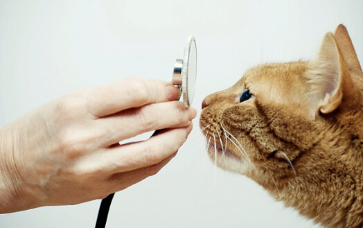

Наша ветеринарная клиника готова уделить максимум внимания Вам и Вашему питамцу. Здоровье и благополучие Ваших животных очень важно для нас и мы стремимся оказать наилучшую возможную ветеринарную помощь.Оржоникидзевская Ветеринарная клиника
Наши услуги



Первичный осмотр
По условиям акции в нашей клинике предоставляетса безплатная услуга “Дневной стационар” которая позволяет экономить Ваше время. Вы имеете возможность оставить у нас.